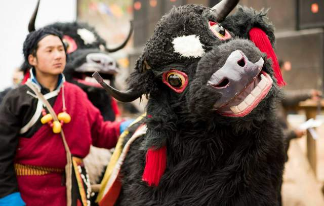
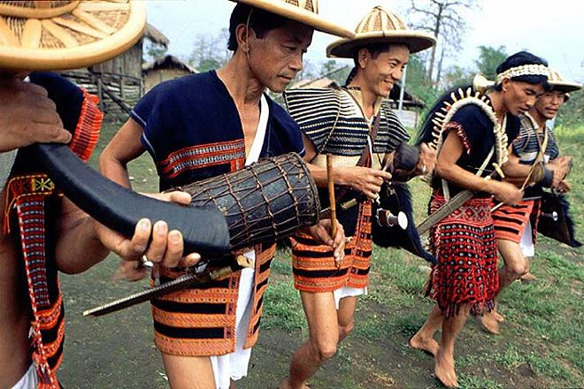

Aji Lamu
Aji Lamu is a traditional dance which is performed by the Monpa tribe, one of the major ethnic groups in the state.
Here are some key points about Aji Lamu:
Cultural Significance: Aji Lamu is an integral part of the cultural heritage of the Monpa people of Arunachal Pradesh. It is often performed during festivals, religious ceremonies, and other special occasions to celebrate harvests, marriages, and other significant events.
Performance: Aji Lamu is a group dance typically performed by both men and women. Dancers wear traditional Monpa attire, which includes colorful robes, ornaments, and headdresses adorned with feathers and beads. The dance movements are graceful and rhythmic, often accompanied by chanting, singing, and the beats of traditional musical instruments.
Instruments: The music for the Aji Lamu dance is provided by traditional Monpa musical instruments such as drums, cymbals, flutes, and string instruments like the danyen (a type of lute) and the piwang (a bowed instrument). These instruments create a lively and rhythmic accompaniment to the dance movements.
Celebration:The Aji Lamu dance is not only a form of artistic expression but also a means of fostering community spirit and unity among the Monpa people. It is often performed with great enthusiasm and participation, bringing together people of all ages to celebrate their cultural heritage and traditions.
Overall, the Aji Lamu dance is an important cultural symbol of Arunachal Pradesh, representing the rich cultural diversity and traditions of the Monpa tribe.

traditional folk music
Traditional folk music in Arunachal Pradesh is deeply intertwined with the cultural and social life of its indigenous communities. Each tribe has its unique musical traditions, instruments, and styles that reflect their history, customs, and beliefs.
Here are some key points about Traditional folk music:
Vocal Music: Singing is an essential part of folk music in Arunachal Pradesh. Songs are sung in various contexts, including festivals, rituals, ceremonies, and everyday life. The lyrics often narrate stories of myths, legends, love, nature, and social issues.
Cultural Significance: Folk music plays a significant role in preserving the cultural identity and heritage of the indigenous tribes of Arunachal Pradesh. It serves as a means of transmitting cultural knowledge, traditions, and values from one generation to the next. Folk songs and music are often passed down orally through generations and are an integral part of the community's social fabric.
Instruments: Traditional musical instruments play a crucial role in Arunachal Pradesh's folk music. Some common instruments used by different tribes include bamboo flutes, drums, gongs, cymbals, mouth organs, and string instruments like the fiddle or the lute. These instruments vary among different tribes and are crafted using local materials found in the region.
Compositions:Folk music in Arunachal Pradesh is characterized by diverse rhythms, melodies, and musical scales, reflecting the cultural diversity of the region. Each tribe has its unique musical style, with distinct rhythms and melodies that distinguish their music from others.
Overall, traditional folk music forms the backbone of Arunachal Pradesh's musical heritage, showcasing the diversity, richness, and vibrancy of the state's indigenous cultures. It continues to be an essential aspect of community life, providing a means of cultural expression, social cohesion, and identity for the people of Arunachal Pradesh.
